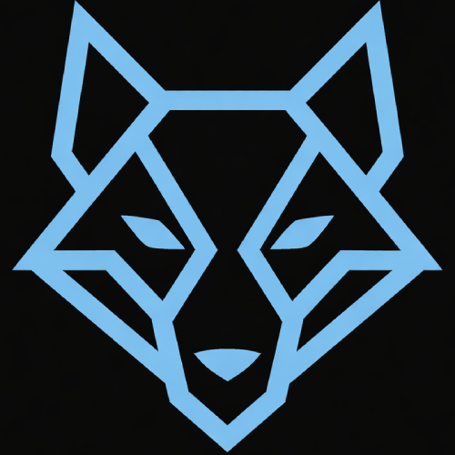

Made for non‑technical users
Every step is written in plain language. Instead of assuming you know how servers work, this website walks you through exactly what to click, what to type, and what to expect.

Your super simple home server – free, open source, and beginner friendly.
WolfLoom is designed for people who don’t want to fight with complicated setups. Follow a few simple steps, open your browser at http://0.0.0.0:5000/, and your personal home server is ready.
WolfLoom is free and open source. View the code on GitHub.
WolfLoom is intentionally simple. Even if you are not very technical, you can follow these steps. Choose your operating system below and follow the instructions carefully.
host.pyin File Explorer and double click it to run.
http://0.0.0.0:5000/WolfLoom is built for people who want the benefits of a home server without the usual complexity. You do not need to understand networking, servers, or command-line tools in depth. I hope this makes it as easy as possible for people to run WolfLoom.
Every step is written in plain language. Instead of assuming you know how servers work, this website walks you through exactly what to click, what to type, and what to expect.
Once WolfLoom is running, you simply open your browser and visit
http://0.0.0.0:5000/. There is no confusing app to learn — just a clean web interface.
WolfLoom is completely free. The source code is available on GitHub, so anyone can inspect it, improve it, or adapt it.
WolfLoom runs on your own hardware. Your data stays with you. There are no subscriptions, no tracking, and no hidden cloud services.
No. WolfLoom is specifically designed for people who are not very tech savvy, as well as those who are tech savvy but just want a quick server to set up. If you wanted, you could add more features to your own private version by downloading and editing the python code to make custom features just for you! The instructions are step-by-step and written in everyday language to be as accessible as possible.
No. WolfLoom is meant to be as easy to run as possible. This means you can run it on old devices you have lying around your house.
Yes. WolfLoom is free and open source. You can use it, share it, and even modify it as long as you follow the license terms in the LICENSE.
WolfLoom runs as long as the terminal window is open.
If you close it, the server stops. To use it again, just run the program or command again.
Please don't close the window or terminal window to stop it however, as this may break it, press CTRL + C in the terminal to safely end to program before closing it.
Yes, you can. Instead of 0.0.0.0, you would use the local IP address
of the device running WolfLoom. For example, http://192.168.0.1:5000/.
This depends on how you configured it in the app.